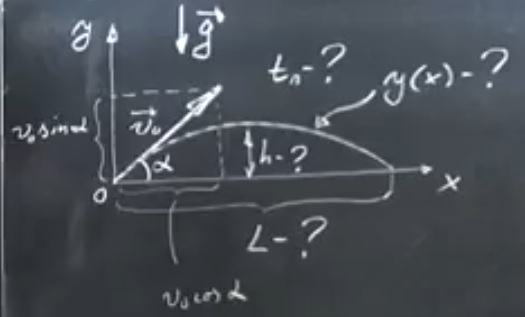
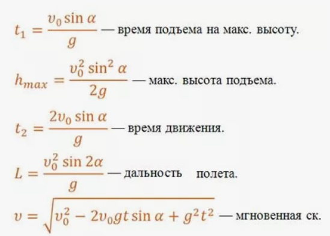

Полный курс: Движение тела под углом к горизонту
Траектория движения

Рис. 1. Траектория движения тела, брошенного под углом к горизонту
На рисунке показана параболическая траектория движения тела, брошенного под углом к горизонту.
Тело движется с постоянной горизонтальной скоростью и равноускоренно по вертикали под действием силы тяжести.

Рис. 1. Траектория движения тела, брошенного под углом к горизонту

Рис. 1. Траектория движения тела, брошенного под углом к горизонту
Уравнения движения с постоянным ускорением
Основные кинематические уравнения для движения с постоянным ускорением:
Ось X (горизонтальная)
$$S_x = v_{0x} t + \frac{g_x t^2}{2}$$
Перемещение по оси X
$$S_x = x - x_0$$
Связь перемещения с координатами
$$x(t) = x_0 + v_{0x} t + \frac{g_x t^2}{2}$$
Зависимость координаты от времени
$$v_x(t) = v_{0x} + g_x t$$
Зависимость скорости от времени
$$x_0 = 0$$
Начальная координата по оси X
$$v_{0x} = v_0 \cdot \cos \alpha$$
Начальная скорость по оси X
$$g_x = 0$$
Ускорение по оси X (отсутствует)
Ось Y (вертикальная)
$$S_y = v_{0y} t + \frac{g_y t^2}{2}$$
Перемещение по оси Y
$$S_y = y - y_0$$
Связь перемещения с координатами
$$y(t) = y_0 + v_{0y} t + \frac{g_y t^2}{2}$$
Зависимость координаты от времени
$$v_y(t) = v_{0y} + g_y t$$
Зависимость скорости от времени
$$y_0 = 0$$
Начальная координата по оси Y
$$v_{0y} = v_0 \cdot \sin \alpha$$
Начальная скорость по оси Y
$$g_y = -g$$
Ускорение по оси Y (ускорение свободного падения)
Уравнения движения тела под углом к горизонту
Уравнения координат и скоростей для тела, брошенного под углом к горизонту:
Координаты
$$x(t) = v_0 \cos \alpha \cdot t$$
Координата X в момент времени t
$$y(t) = v_0 \sin \alpha \cdot t - \frac{gt^2}{2}$$
Координата Y в момент времени t
Скорости
$$v_x(t) = v_0 \cdot \cos \alpha$$
Горизонтальная составляющая скорости
$$v_y(t) = v_0 \sin \alpha - gt$$
Вертикальная составляющая скорости
Дальность полёта
$$\sin 2\alpha = 2 \sin \alpha \cos \alpha$$
$$S_x = v_0 t_2 \cos \alpha$$
где $t_2$ - время полёта
Условия: $y_2 = 0$, $y_0 = 0$
$$y_2 = 0 = v_0 t_2 \sin \alpha - \frac{g t_2^2}{2}$$
Делим на $t_2$:
$$0 = v_0 \sin \alpha - \frac{g t_2}{2}$$
Отсюда:
$$t_2 = \frac{2 v_0 \sin \alpha}{g}$$
$$S_x = \frac{v_0^2}{g} \sin 2\alpha$$
Максимальная высота подъёма
$$v_{y1} = v_0 \sin \alpha - g t_1 = 0$$
где $t_1$ - время подъёма
Следовательно:
$$t_1 = \frac{v_0 \sin \alpha}{g}$$
При $y_0 = 0$:
$$y_1 = h_{\text{max}} = v_0 t_1 \sin \alpha - \frac{g t_1^2}{2}$$
Подставляем $t_1$:
$$h_{\text{max}} = \frac{v_0^2 \sin^2 \alpha}{2g}$$
40 заданий с решениями
Задания 1-10
Задание 1
Тело брошено под углом 30° к горизонту с начальной скоростью 20 м/с. Найдите время полёта.
Решение:
$$t = \frac{2v_0 \sin\alpha}{g}$$
$$t = \frac{2 \cdot 20 \cdot \sin 30°}{10} = \frac{40 \cdot 0.5}{10} = 2 \text{ с}$$
Задание 2
Мяч брошен со скоростью 15 м/с под углом 45° к горизонту. Найдите максимальную высоту подъёма.
Решение:
$$h_{max} = \frac{v_0^2 \sin^2\alpha}{2g}$$
$$h_{max} = \frac{15^2 \cdot (\sin 45°)^2}{2 \cdot 10} = \frac{225 \cdot 0.5}{20} = 5.625 \text{ м}$$
Задание 3
Снаряд вылетает из орудия со скоростью 100 м/с под углом 60° к горизонту. Найдите дальность полёта.
Решение:
$$L = \frac{v_0^2 \sin 2\alpha}{g}$$
$$L = \frac{100^2 \cdot \sin 120°}{10} = \frac{10000 \cdot \sqrt{3}/2}{10} = 500\sqrt{3} \approx 866 \text{ м}$$
Задание 4
Тело брошено под углом к горизонту и упало на расстоянии 40 м. Время полёта составило 4 с. Найдите начальную скорость и угол броска.
Решение:
$$L = v_0 \cos\alpha \cdot t$$
$$t = \frac{2v_0 \sin\alpha}{g}$$
$$40 = v_0 \cos\alpha \cdot 4 \Rightarrow v_0 \cos\alpha = 10$$
$$4 = \frac{2v_0 \sin\alpha}{10} \Rightarrow v_0 \sin\alpha = 20$$
$$\tan\alpha = \frac{v_0 \sin\alpha}{v_0 \cos\alpha} = \frac{20}{10} = 2 \Rightarrow \alpha \approx 63.4°$$
$$v_0 = \sqrt{(v_0 \cos\alpha)^2 + (v_0 \sin\alpha)^2} = \sqrt{10^2 + 20^2} = \sqrt{500} \approx 22.36 \text{ м/с}$$
Задание 5
Под каким углом к горизонту нужно бросить тело, чтобы дальность полёта была максимальной?
Решение:
$$L = \frac{v_0^2 \sin 2\alpha}{g}$$
Максимум достигается при $\sin 2\alpha = 1$
$$2\alpha = 90° \Rightarrow \alpha = 45°$$
Задание 6
Два тела брошены с одинаковой скоростью под углами 30° и 60°. Во сколько раз отличаются максимальные высоты их подъёма?
Решение:
$$h_{max} = \frac{v_0^2 \sin^2\alpha}{2g}$$
$$\frac{h_1}{h_2} = \frac{\sin^2 30°}{\sin^2 60°} = \frac{(1/2)^2}{(\sqrt{3}/2)^2} = \frac{1/4}{3/4} = \frac{1}{3}$$
Задание 7
Камень брошен с высоты 5 м со скоростью 10 м/с под углом 30° к горизонту. Найдите время полёта до падения на землю.
Решение:
$$y = y_0 + v_0 \sin\alpha \cdot t - \frac{gt^2}{2}$$
$$0 = 5 + 10 \cdot \sin 30° \cdot t - 5t^2$$
$$0 = 5 + 5t - 5t^2 \Rightarrow t^2 - t - 1 = 0$$
$$t = \frac{1 + \sqrt{1 + 4}}{2} = \frac{1 + \sqrt{5}}{2} \approx 1.62 \text{ с}$$
Задание 8
Мяч брошен под углом 45° и достиг максимальной высоты 10 м. Найдите начальную скорость.
Решение:
$$h_{max} = \frac{v_0^2 \sin^2\alpha}{2g}$$
$$10 = \frac{v_0^2 \cdot (\sin 45°)^2}{20} = \frac{v_0^2 \cdot 0.5}{20}$$
$$v_0^2 = 400 \Rightarrow v_0 = 20 \text{ м/с}$$
Задание 9
Тело брошено со скоростью 25 м/с. При каком угле броска время полёта составит 3 с?
Решение:
$$t = \frac{2v_0 \sin\alpha}{g}$$
$$3 = \frac{2 \cdot 25 \cdot \sin\alpha}{10} = 5 \sin\alpha$$
$$\sin\alpha = 0.6 \Rightarrow \alpha \approx 36.9°$$
Задание 10
Два тела брошены с одинаковой скоростью. Одно под углом 30°, другое под углом 60°. Во сколько раз отличаются дальности их полёта?
Решение:
$$L = \frac{v_0^2 \sin 2\alpha}{g}$$
$$\frac{L_1}{L_2} = \frac{\sin 60°}{\sin 120°} = \frac{\sin 60°}{\sin 60°} = 1$$
Дальности полёта одинаковы!
Задания 11-20
Задание 11
Тело брошено под углом 30° к горизонту. В верхней точке траектории его скорость равна 10 м/с. Найдите начальную скорость.
Решение:
В верхней точке $v_y = 0$, $v = v_x = v_0 \cos\alpha$
$$10 = v_0 \cos 30° = v_0 \cdot \frac{\sqrt{3}}{2}$$
$$v_0 = \frac{20}{\sqrt{3}} \approx 11.55 \text{ м/с}$$
Задание 12
Мяч брошен со скоростью 20 м/с под углом 60°. Найдите скорость мяча через 1 с после броска.
Решение:
$$v_x = v_0 \cos\alpha = 20 \cdot \cos 60° = 10 \text{ м/с}$$
$$v_y = v_0 \sin\alpha - gt = 20 \cdot \sin 60° - 10 \cdot 1 = 17.32 - 10 = 7.32 \text{ м/с}$$
$$v = \sqrt{v_x^2 + v_y^2} = \sqrt{100 + 53.6} \approx 12.37 \text{ м/с}$$
Задание 13
Под каким углом к горизонту брошено тело, если его скорость в наивысшей точке траектории равна половине начальной скорости?
Решение:
В верхней точке $v = v_0 \cos\alpha$
$$\frac{v_0}{2} = v_0 \cos\alpha \Rightarrow \cos\alpha = \frac{1}{2} \Rightarrow \alpha = 60°$$
Задание 14
Тело брошено с начальной скоростью 30 м/с. Найдите углы бросания, при которых дальность полёта составит 45 м.
Решение:
$$L = \frac{v_0^2 \sin 2\alpha}{g}$$
$$45 = \frac{900 \cdot \sin 2\alpha}{10} = 90 \sin 2\alpha$$
$$\sin 2\alpha = 0.5 \Rightarrow 2\alpha = 30° \text{ или } 150°$$
$$\alpha = 15° \text{ или } 75°$$
Задание 15
Снаряд вылетает из орудия под углом 40° с начальной скоростью 200 м/с. На каком расстоянии от орудия он упадёт?
Решение:
$$L = \frac{v_0^2 \sin 2\alpha}{g}$$
$$L = \frac{40000 \cdot \sin 80°}{10} = 4000 \cdot 0.9848 \approx 3939 \text{ м}$$
Задание 16
Мяч брошен под углом 30° и упал на расстоянии 20 м. Найдите начальную скорость.
Решение:
$$L = \frac{v_0^2 \sin 2\alpha}{g}$$
$$20 = \frac{v_0^2 \cdot \sin 60°}{10} = \frac{v_0^2 \cdot 0.866}{10}$$
$$v_0^2 = \frac{200}{0.866} \approx 231 \Rightarrow v_0 \approx 15.2 \text{ м/с}$$
Задание 17
Тело брошено под углом 45° к горизонту. В какой момент времени его скорость будет направлена под углом 30° к горизонту?
Решение:
$$\tan\varphi = \frac{v_y}{v_x} = \frac{v_0 \sin\alpha - gt}{v_0 \cos\alpha}$$
$$\tan 30° = \frac{v_0 \sin 45° - 10t}{v_0 \cos 45°} = 1 - \frac{10t}{v_0 \cos 45°}$$
Для решения нужно знать $v_0$
Задание 18
Найдите отношение максимальной высоты подъёма к дальности полёта для тела, брошенного под углом $\alpha$ к горизонту.
Решение:
$$h_{max} = \frac{v_0^2 \sin^2\alpha}{2g}, \quad L = \frac{v_0^2 \sin 2\alpha}{g}$$
$$\frac{h_{max}}{L} = \frac{\sin^2\alpha}{2\sin 2\alpha} = \frac{\sin^2\alpha}{4\sin\alpha\cos\alpha} = \frac{\tan\alpha}{4}$$
Задание 19
Тело брошено со скоростью 15 м/с. При каком угле броска дальность полёта будет в 2 раза больше максимальной высоты?
Решение:
$$L = 2h_{max}$$
$$\frac{v_0^2 \sin 2\alpha}{g} = 2 \cdot \frac{v_0^2 \sin^2\alpha}{2g}$$
$$\sin 2\alpha = \sin^2\alpha \Rightarrow 2\sin\alpha\cos\alpha = \sin^2\alpha$$
$$2\cos\alpha = \sin\alpha \Rightarrow \tan\alpha = 2 \Rightarrow \alpha \approx 63.4°$$
Задание 20
Мяч брошен с высоты 10 м со скоростью 12 м/с под углом 30° к горизонту. Найдите время полёта.
Решение:
$$y = y_0 + v_0 \sin\alpha \cdot t - \frac{gt^2}{2}$$
$$0 = 10 + 12 \cdot \sin 30° \cdot t - 5t^2$$
$$0 = 10 + 6t - 5t^2 \Rightarrow 5t^2 - 6t - 10 = 0$$
$$t = \frac{6 + \sqrt{36 + 200}}{10} = \frac{6 + \sqrt{236}}{10} \approx \frac{6 + 15.36}{10} \approx 2.14 \text{ с}$$
Задания 21-30
Задание 21
Тело брошено под углом 60°. Через какое время его скорость составит 45° к горизонту?
Решение:
$$\tan\varphi = \frac{v_y}{v_x} = \frac{v_0 \sin\alpha - gt}{v_0 \cos\alpha}$$
$$\tan 45° = 1 = \frac{v_0 \sin 60° - 10t}{v_0 \cos 60°}$$
Для решения нужно знать $v_0$
Задание 22
Найдите время подъёма тела, брошенного под углом $\alpha$, если известно, что оно достигло высоты $h$.
Решение:
$$h = v_0 \sin\alpha \cdot t - \frac{gt^2}{2}$$
Решаем квадратное уравнение относительно $t$
Задание 23
Тело брошено с начальной скоростью 25 м/с. Под каким углом его нужно бросить, чтобы оно упало на расстоянии 30 м?
Решение:
$$L = \frac{v_0^2 \sin 2\alpha}{g}$$
$$30 = \frac{625 \cdot \sin 2\alpha}{10} = 62.5 \sin 2\alpha$$
$$\sin 2\alpha = 0.48 \Rightarrow 2\alpha \approx 28.7° \text{ или } 151.3°$$
$$\alpha \approx 14.35° \text{ или } 75.65°$$
Задание 24
Мяч брошен со скоростью 18 м/с под углом 53° к горизонту. Найдите координаты мяча через 1.5 с.
Решение:
$$x = v_0 \cos\alpha \cdot t = 18 \cdot \cos 53° \cdot 1.5 \approx 18 \cdot 0.6 \cdot 1.5 = 16.2 \text{ м}$$
$$y = v_0 \sin\alpha \cdot t - \frac{gt^2}{2} = 18 \cdot \sin 53° \cdot 1.5 - 5 \cdot 2.25$$
$$y \approx 18 \cdot 0.8 \cdot 1.5 - 11.25 = 21.6 - 11.25 = 10.35 \text{ м}$$
Задание 25
Докажите, что для тела, брошенного под углом к горизонту, траектория движения является параболой.
Решение:
$$x = v_0 \cos\alpha \cdot t \Rightarrow t = \frac{x}{v_0 \cos\alpha}$$
$$y = v_0 \sin\alpha \cdot t - \frac{gt^2}{2} = x \cdot \tan\alpha - \frac{gx^2}{2v_0^2 \cos^2\alpha}$$
Это уравнение параболы $y = ax - bx^2$
Задание 26
Тело брошено под углом 30°. В момент времени 1 с его скорость равна 15 м/с. Найдите начальную скорость.
Решение:
$$v_x = v_0 \cos 30° = 0.866 v_0$$
$$v_y = v_0 \sin 30° - 10 \cdot 1 = 0.5 v_0 - 10$$
$$v^2 = v_x^2 + v_y^2 = (0.866 v_0)^2 + (0.5 v_0 - 10)^2 = 225$$
$$0.75 v_0^2 + 0.25 v_0^2 - 10 v_0 + 100 = 225$$
$$v_0^2 - 10 v_0 - 125 = 0$$
$$v_0 = \frac{10 + \sqrt{100 + 500}}{2} = \frac{10 + \sqrt{600}}{2} \approx \frac{10 + 24.49}{2} \approx 17.25 \text{ м/с}$$
Задание 27
Найдите радиус кривизны траектории в наивысшей точке для тела, брошенного под углом $\alpha$ с начальной скоростью $v_0$.
Решение:
В верхней точке $v = v_0 \cos\alpha$, $a_n = g$
$$R = \frac{v^2}{a_n} = \frac{v_0^2 \cos^2\alpha}{g}$$
Задание 28
Тело брошено с поверхности земли и упало на расстоянии 100 м. Максимальная высота подъёма составила 20 м. Найдите начальную скорость и угол броска.
Решение:
$$h_{max} = \frac{v_0^2 \sin^2\alpha}{2g} = 20$$
$$L = \frac{v_0^2 \sin 2\alpha}{g} = 100$$
$$\frac{h_{max}}{L} = \frac{\sin^2\alpha}{2\sin 2\alpha} = \frac{\sin^2\alpha}{4\sin\alpha\cos\alpha} = \frac{\tan\alpha}{4} = \frac{20}{100} = 0.2$$
$$\tan\alpha = 0.8 \Rightarrow \alpha \approx 38.66°$$
$$v_0^2 = \frac{Lg}{\sin 2\alpha} = \frac{1000}{\sin 77.32°} \approx \frac{1000}{0.975} \approx 1025.6$$
$$v_0 \approx 32.02 \text{ м/с}$$
Задание 29
Мяч брошен под углом 45° и через 2 с его скорость направлена горизонтально. Найдите начальную скорость.
Решение:
Скорость направлена горизонтально когда $v_y = 0$
$$v_y = v_0 \sin 45° - 10 \cdot 2 = 0$$
$$v_0 \cdot \frac{\sqrt{2}}{2} = 20 \Rightarrow v_0 = 20\sqrt{2} \approx 28.28 \text{ м/с}$$
Задание 30
Тело брошено со скоростью 20 м/с. Найдите его скорость в момент, когда оно находится на высоте 10 м.
Решение:
Используем закон сохранения энергии:
$$\frac{mv_0^2}{2} = mgh + \frac{mv^2}{2}$$
$$v^2 = v_0^2 - 2gh = 400 - 200 = 200$$
$$v = \sqrt{200} \approx 14.14 \text{ м/с}$$
Задания 31-40
Задание 31
Два тела брошены из одной точки с одинаковыми скоростями 25 м/с под углами 30° и 60°. Какое расстояние будет между ними через 1 с?
Решение:
Координаты первого тела:
$$x_1 = 25 \cdot \cos 30° \cdot 1 = 21.65 \text{ м}$$
$$y_1 = 25 \cdot \sin 30° \cdot 1 - 5 = 12.5 - 5 = 7.5 \text{ м}$$
Координаты второго тела:
$$x_2 = 25 \cdot \cos 60° \cdot 1 = 12.5 \text{ м}$$
$$y_2 = 25 \cdot \sin 60° \cdot 1 - 5 = 21.65 - 5 = 16.65 \text{ м}$$
$$d = \sqrt{(21.65-12.5)^2 + (7.5-16.65)^2} = \sqrt{9.15^2 + (-9.15)^2} = \sqrt{167.4} \approx 12.94 \text{ м}$$
Задание 32
Тело брошено под углом $\alpha$. Найдите отношение времени подъёма ко всему времени полёта.
Решение:
$$t_{подъёма} = \frac{v_0 \sin\alpha}{g}, \quad t_{полёта} = \frac{2v_0 \sin\alpha}{g}$$
$$\frac{t_{подъёма}}{t_{полёта}} = \frac{1}{2}$$
Задание 33
Мяч брошен с начальной скоростью 15 м/с. Под каким углом его нужно бросить, чтобы он упал на расстоянии 20 м?
Решение:
$$L = \frac{v_0^2 \sin 2\alpha}{g}$$
$$20 = \frac{225 \cdot \sin 2\alpha}{10} = 22.5 \sin 2\alpha$$
$$\sin 2\alpha = \frac{20}{22.5} \approx 0.8889 \Rightarrow 2\alpha \approx 62.7° \text{ или } 117.3°$$
$$\alpha \approx 31.35° \text{ или } 58.65°$$
Задание 34
Найдите угол, под которым нужно бросить тело, чтобы его скорость в наивысшей точке составляла 60% от начальной скорости.
Решение:
В верхней точке $v = v_0 \cos\alpha$
$$0.6 v_0 = v_0 \cos\alpha \Rightarrow \cos\alpha = 0.6 \Rightarrow \alpha \approx 53.13°$$
Задание 35
Тело брошено под углом 30° и достигло высоты 5 м. Найдите начальную скорость.
Решение:
$$h_{max} = \frac{v_0^2 \sin^2\alpha}{2g}$$
$$5 = \frac{v_0^2 \cdot (\sin 30°)^2}{20} = \frac{v_0^2 \cdot 0.25}{20}$$
$$v_0^2 = 400 \Rightarrow v_0 = 20 \text{ м/с}$$
Задание 36
Мяч брошен со скоростью 10 м/с. При каком угле броска время полёта будет равно 1.5 с?
Решение:
$$t = \frac{2v_0 \sin\alpha}{g}$$
$$1.5 = \frac{2 \cdot 10 \cdot \sin\alpha}{10} = 2 \sin\alpha$$
$$\sin\alpha = 0.75 \Rightarrow \alpha \approx 48.59°$$
Задание 37
Тело брошено с высоты 15 м со скоростью 12 м/с под углом 30° к горизонту. Найдите дальность полёта.
Решение:
$$y = y_0 + v_0 \sin\alpha \cdot t - \frac{gt^2}{2}$$
$$0 = 15 + 12 \cdot \sin 30° \cdot t - 5t^2$$
$$0 = 15 + 6t - 5t^2 \Rightarrow 5t^2 - 6t - 15 = 0$$
$$t = \frac{6 + \sqrt{36 + 300}}{10} = \frac{6 + \sqrt{336}}{10} \approx \frac{6 + 18.33}{10} \approx 2.433 \text{ с}$$
$$L = v_0 \cos\alpha \cdot t = 12 \cdot \cos 30° \cdot 2.433 \approx 10.392 \cdot 2.433 \approx 25.28 \text{ м}$$
Задание 38
Найдите скорость тела в момент падения на землю, если оно было брошено под углом $\alpha$ с начальной скоростью $v_0$.
Решение:
По закону сохранения энергии скорость при падении равна начальной скорости:
$$v = v_0$$
Задание 39
Тело брошено под углом 60°. Через какое время его скорость будет направлена под углом 45° к горизонту, если начальная скорость 20 м/с?
Решение:
$$\tan\varphi = \frac{v_y}{v_x} = \frac{v_0 \sin\alpha - gt}{v_0 \cos\alpha}$$
$$\tan 45° = 1 = \frac{20 \cdot \sin 60° - 10t}{20 \cdot \cos 60°} = \frac{17.32 - 10t}{10}$$
$$10 = 17.32 - 10t \Rightarrow 10t = 7.32 \Rightarrow t = 0.732 \text{ с}$$
Задание 40
Два тела брошены из одной точки с одинаковыми скоростями. Одно под углом 30°, другое под углом 60°. Какое из них достигнет большей высоты и во сколько раз?
Решение:
$$h_{max} = \frac{v_0^2 \sin^2\alpha}{2g}$$
$$\frac{h_{60°}}{h_{30°}} = \frac{\sin^2 60°}{\sin^2 30°} = \frac{(\sqrt{3}/2)^2}{(1/2)^2} = \frac{3/4}{1/4} = 3$$
Тело, брошенное под углом 60°, достигнет в 3 раза большей высоты.